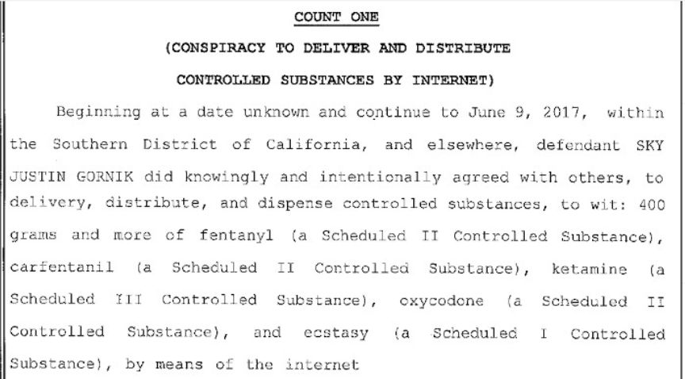
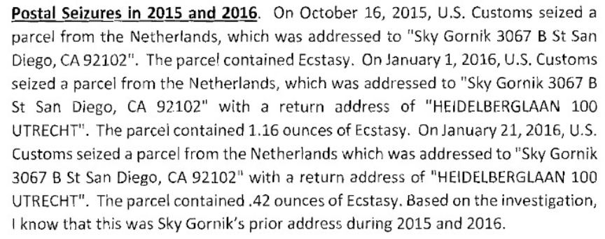
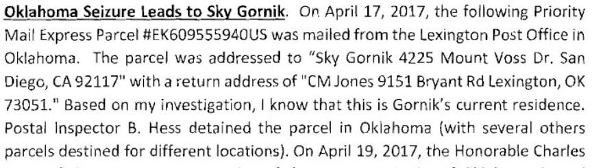
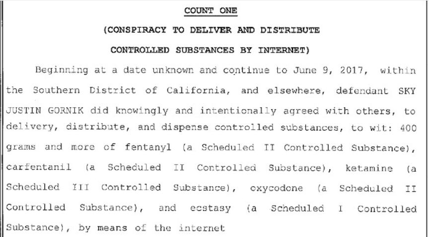
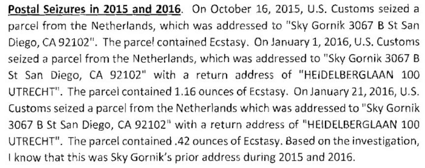
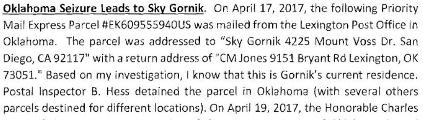

Darkweb Vendor Sentenced to 70 Months in Prison
~3 min read | Published on 2019-08-20, tagged Darkweb-Vendor, Sentenced using 597 words.
Sky Justin Gornik, a 39-year-old from San Diego, California, was sentenced to 70 months in prison for selling dozens of different controlled substances on the darkweb. He previously admitted conspiracy to launder money through an array of cryptocurrencies including Monero, Bitcoin, Ethereum, and Stratis.
District Court Judge Anthony J. Battaglia sentenced Gornik to 70 months in prison for participating in a conspiracy to deliver, distribute and dispense controlled substances through the internet. Based on the information provided in court documents and information from members of darkweb forums such as Dread and the comment section of DeepDotWeb, some suspect that Gornik worked as a shipper for a much larger darkweb vendor with customers in dozens of countries throughout the world.
His sealed plea agreement also indicated that the authorities wanted something kept from the general public. This could be something as simple as undocumented techniques used during the investigation or something as complex as an ongoing investigation into an international drug trafficking organization.
Archived Guilty Plea Announcement
In the plea agreement, according to the press release from the U.S. Attorney’s Office of the Southern District of California, Gornik admitted selling drugs on AlphaBay, Trade Route, Abraxas, Evolution, Outlaw Market, and Dream Market. The list of substances he admitted to selling was even longer: “thousands of vials of ketamine, oxycodone pills, Dimethyltryptamine (DMT), Psilocybin, Psilocin, Amphetamine, Buprenorphine, Methamphetamine, and Naloxone.” He also sold carfentanil and fentanyl–a fact the U.S. Attorney’s Office highlighted in multiple press releases. They pointed out that law enforcement had seized “86,000 fatal dosages of an opiate” during a search of Gornik’s home.
A notebook with USPS tracking numbers, balance sheets, and USPS shipping materials (labels and packages) were found alongside the collection of drugs in Gornik’s house in Clairemont, California.
Gornik obtained 600 to 1,200 fentanyl gel tablets each week for about two years from a darkweb vendor identified Steven Wallace George, who manufactured the pure supplies of the drug that he obtained from China into gelatin tablets.
George (Case No. 17-090-R, Western District of Oklahoma) previously pleaded guilty in an Oklahoma federal court to possession with intent to distribute methamphetamine and distribution of fentanyl. His case resulted in the discovery of a significant amount of evidence linking Gornik to George. George’s case also resulted in the arrest of former U.S. Navy Commander Adolph Garza for similar drug trafficking crimes.
US Navy Commander Adolph Garza, resident of San Diego, admittedly using the Dark Web to make multiple controlled products, including ecstasy, ketamine, cocaine, amphetamine and other controlled substances over 18-month period, beginning on August 12, 2016 and continuing up to March 7, 2018.
Postal Inspector B. Hess intercepted a package sent from George to Gornik. The package contained 95 grams of Fentanyl in the form of gel tablets. Investigators built a profile based on the seized package and identified six additional packages that were similar in weight.
The drugs Gornik admitted to distributing between 2014 and 2017 automatically qualify him as a large-scale drug trafficker. The funds Gornik agreed to forfeit add perspective to Gornik’s lucrative operation.
As part of his guilty plea, Gornik agreed to forfeit millions of dollars in digital or crypto currency including Bitcoins, Stratis, Ethereum, 2350 Monero, digital currency contained in Gornik’s Bittrex accounts, and digital currency contained in Gornik’s Poloniex accounts. Gornik admitted that these digital or crypto currency represented drug trafficking proceeds of the offense and were involved in the offense of money laundering over the Dark Web.
U.S. Postal Inspectors in San Diego and Special Agents of Homeland Security Investigations led the investigation into Gornik.
Archived Press Release
District Court Judge Anthony J. Battaglia sentenced Gornik to 70 months in prison for participating in a conspiracy to deliver, distribute and dispense controlled substances through the internet. Based on the information provided in court documents and information from members of darkweb forums such as Dread and the comment section of DeepDotWeb, some suspect that Gornik worked as a shipper for a much larger darkweb vendor with customers in dozens of countries throughout the world.
Gornik's Conspiracy Charge
His sealed plea agreement also indicated that the authorities wanted something kept from the general public. This could be something as simple as undocumented techniques used during the investigation or something as complex as an ongoing investigation into an international drug trafficking organization.
Archived Guilty Plea Announcement
In the plea agreement, according to the press release from the U.S. Attorney’s Office of the Southern District of California, Gornik admitted selling drugs on AlphaBay, Trade Route, Abraxas, Evolution, Outlaw Market, and Dream Market. The list of substances he admitted to selling was even longer: “thousands of vials of ketamine, oxycodone pills, Dimethyltryptamine (DMT), Psilocybin, Psilocin, Amphetamine, Buprenorphine, Methamphetamine, and Naloxone.” He also sold carfentanil and fentanyl–a fact the U.S. Attorney’s Office highlighted in multiple press releases. They pointed out that law enforcement had seized “86,000 fatal dosages of an opiate” during a search of Gornik’s home.
Court Documents Show Gornik's Seized Packages
A notebook with USPS tracking numbers, balance sheets, and USPS shipping materials (labels and packages) were found alongside the collection of drugs in Gornik’s house in Clairemont, California.
Gornik obtained 600 to 1,200 fentanyl gel tablets each week for about two years from a darkweb vendor identified Steven Wallace George, who manufactured the pure supplies of the drug that he obtained from China into gelatin tablets.
Fentanyl Gel Tabs from reddit.com/r/fentanyl
George (Case No. 17-090-R, Western District of Oklahoma) previously pleaded guilty in an Oklahoma federal court to possession with intent to distribute methamphetamine and distribution of fentanyl. His case resulted in the discovery of a significant amount of evidence linking Gornik to George. George’s case also resulted in the arrest of former U.S. Navy Commander Adolph Garza for similar drug trafficking crimes.
US Navy Commander Adolph Garza, resident of San Diego, admittedly using the Dark Web to make multiple controlled products, including ecstasy, ketamine, cocaine, amphetamine and other controlled substances over 18-month period, beginning on August 12, 2016 and continuing up to March 7, 2018.
Postal Inspector B. Hess intercepted a package sent from George to Gornik. The package contained 95 grams of Fentanyl in the form of gel tablets. Investigators built a profile based on the seized package and identified six additional packages that were similar in weight.
Gornik's OK Seizures
The drugs Gornik admitted to distributing between 2014 and 2017 automatically qualify him as a large-scale drug trafficker. The funds Gornik agreed to forfeit add perspective to Gornik’s lucrative operation.
As part of his guilty plea, Gornik agreed to forfeit millions of dollars in digital or crypto currency including Bitcoins, Stratis, Ethereum, 2350 Monero, digital currency contained in Gornik’s Bittrex accounts, and digital currency contained in Gornik’s Poloniex accounts. Gornik admitted that these digital or crypto currency represented drug trafficking proceeds of the offense and were involved in the offense of money laundering over the Dark Web.
U.S. Postal Inspectors in San Diego and Special Agents of Homeland Security Investigations led the investigation into Gornik.
Archived Press Release